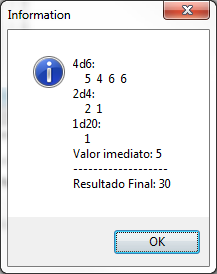
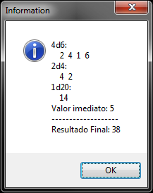
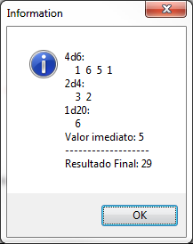

Objeto Rolagem
Objeto Rolagem
Este objeto contém informações sobre uma rolagem de dados que ocorreu ou que poderá ocorrer.
Você pode criar um objeto rolagem utilizando a função rrpg.interpretarRolagem
Características
Propriedades e atributos
| Propriedade | Tipo | Descrição |
|---|---|---|
| tipo | Enumerado: "direta" "storyteller" | Somente leitura, contém o tipo da rolagem. "direta" - Rolagem de dados padrão. "storyteller" - Rolagem de dados storyteller. Quantidade de dados cuja face seja maior ou igual a algum numero e que um resultado natural 1 anula um sucesso |
| possuiAlgumDado | Boolean | Somente leitura, contém true se a rolagem possuir pelo menos um dado de qualquer face. Exemplo: Na rolagem "+5" a propriedade conteria false, enquanto na rolagem "d6 + 5" conteria true. |
| asString | String | Somente leitura, contém a rolagem como uma cadeia de caracteres. |
| isRolado | Boolean | Somente leitura, contém true se a rolagem já foi executada e possui o resultado, ou false se ainda não. |
| resultado | Integer | Somente leitura, contém o valor resultado da rolagem se ela já tiver sido feita. Se a rolagem ainda não tiver executada, contém 0. |
| ops | Arranjo de Objetos OperacaoRolagem | Contém a lista de operações "aritméticas" da rolagem. É um arranjo de tabelas/objetos, isto é, uma tabela lua indexada de 1 a N, onde cada posição possui uma tabela conforme a operação... Veja Lista de Operações de Rolagens |
Métodos
| Método | Descrição |
|---|---|
| rolagem:interpretarString(str) | Dado uma cadeia de caracteres representando uma rolagem de dados (Exemplos: "1d20 + 5", "1d20 + 1d10 - 5", etc..), atualiza as informações da rolagem de dados. Observação: Se "str" não contiver um texto de uma rolagem válida, o objeto rolagem é resetado. |
| rolagem:concatenar(outraRolagem) | Adiciona ao final desta rolagem de dados as operações "aritméticas" de outra rolagem, juntando-as. Parâmetros: outraRolagem - uma cadeia de caracteres ou um outro objeto rolagem que será concatenada. Retorno: Retorna o próprio objeto rolagem. |
| rolagem:rolarLocalmente() | Executa a rolagem localmente. Esta função realiza os sorteios e demais operações sem haver necessidade do usuário estar em uma mesa. Observações: Após a chamada desta função, o resultado pode ser acessado através das propriedades "resultado" e "ops". Este resultado não será exibido em lugar algum automaticamente e depende de você tratá-lo conforme desejar. Se você executar este método em uma rolagem que já foi rolada, o resultado anterior será sobrescrito com novos resultados. |
Operações de Rolagem (Cada item do arranjo Rolagem.ops)
Cada operação de rolagem é uma tabela lua com as seguintes propriedades:
| Propriedade | Tipo | Descrição |
|---|---|---|
| tipo | Enumerado: "dado" "imediato" "soma" "subtracao" "comparacao" "ordenacao" "desconhecido" | Determina qual é a operação. "dado" - Um grupo de dados a serem rolados "imediato" - Um número constante especificado pelo usuário. "comparacao" - Uma comparação entre números/dados. "ordenacao" - Pedido para ordenar o resultado de forma decrescente. Os demais valores são autoexplicativos. |
| quantidade | Integer | Quando o tipo == "dado", determina quantos dados da face informada serão rolados. |
| face | Integer ou String | Quando tipo == "dado", contém qual é face dos dados.. Exemplos: 4 6 8 10 "F" (dado fudge) |
| resultados | Arranjo de Integer | Quando tipo == "dado" e se a rolagem já tiver sido feita, contém um arranjo de números representando o resultado individual de cada dado na operação. |
| comparacao | String | Quando tipo == "comparacao", contém qual é o comparador. |
| valor | Integer | Quando tipo == "imediato" contém o valor do número constante literal informado. |
Exemplos
Exemplo 1 - Uma ficha que rola dados na mesa
| \<?xml version="1.0" encoding="UTF-8"?> \<form name="frmFichaTeste"> \<button> \<event name="onClick"> local rolagem = rrpg.interpretarRolagem(sheet.ataqueDoPersonagem); if not rolagem.possuiAlgumDado then -- se o usuario não tiver preenchido qual dado rolar, -- vamos adicionar um 1d20 + na "fórmula da rolagem" rolagem = rrpg.interpretarRolagem("1d20"):concatenar(rolagem); end; local mesaDoPersonagem = rrpg.getMesaDe(sheet); mesaDoPersonagem.chat:rolarDados(rolagem, "Ataque do personagem"); \</event> \</button> \</form> |
|---|
\ Exemplo 2 - Rolar localmente e exibir uma mensagem personalizada.
| local msg = ""; -- Interpretar uma rolagem, digamos: 4d6 + 2d4 + d20 + 5 local rolagem = rrpg.interpretarRolagem("4d6 + 2d4 + d20 + 5"); -- Executar a rolagem localmente rolagem:rolarLocalmente(); -- Loop para navegar em cada uma das operações da rolagem for i = 1, #rolagem.ops, 1 do local operacao = rolagem.ops[i]; -- Vamos verificar que tipo de operação é esta. if operacao.tipo == "dado" then -- Adicionar à mensagem informações sobre este conjunto de dados. msg = msg .. operacao.quantidade .. "d" .. operacao.face .. ": \n "; -- Loop percorrendo cada um dos resultados individuais deste conjunto de dados. for j = 1, #operacao.resultados, 1 do msg = msg .. " " .. operacao.resultados[j]; end; msg = msg .. "\n"; elseif operacao.tipo == "imediato" then msg = msg .. "Valor imediato: " .. operacao.valor .. "\n"; end; end; -- Concatenar à mensagem o resultado final da rolagem msg = msg .. "------------------- \nResultado Final: " .. rolagem.resultado; -- Exibir a mensagem que montamos. showMessage(msg); |
|---|
  
Exemplo 3 - Uma ficha fazendo um teste (de resistência, por exemplo) e postando o resultado na mesa.
| \<?xml version="1.0" encoding="UTF-8"?> \<form name="frmFTeste"> \<script> local function realizarTesteDeResistencia() -- obter a mesa do personagem local mesaDoPersonagem = rrpg.getMesaDe(sheet); -- se o usuário não preencheu modificador, vamos usar o valor 0 sheet.modificador = sheet.modificador or 0; mesaDoPersonagem.chat:rolarDados("1d20 + " .. sheet.modificador, "Teste de Resistência", function (rolado) -- A dificuldade do teste é 15 if rolado.resultado >= 15 then mesaDoPersonagem.chat:enviarMensagem("SUCESSO =) você tirou " .. rolado.resultado); else mesaDoPersonagem.chat:enviarMensagem("FALHA =/ você tirou " .. rolado.resultado); end; end); end; \</script> \<button onClick="realizarTesteDeResistencia()"/> \</form> |
|---|
Created with the Personal Edition of HelpNDoc: Powerful and User-Friendly Help Authoring Tool for Markdown Documents